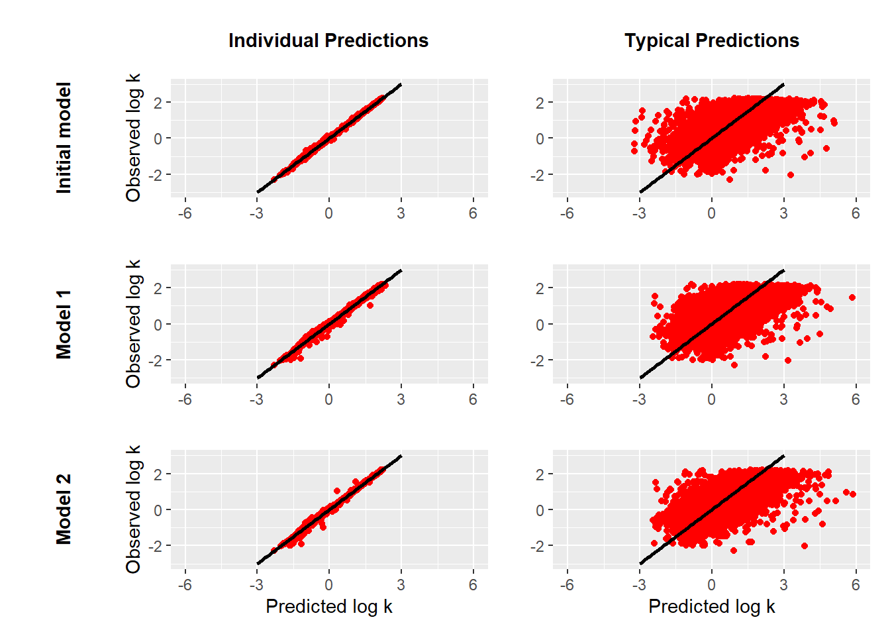

Code
library(metRology)
library(ggplot2)
DS <- read.csv(here::here("1_data/database_stan_1026.csv"),header = TRUE, sep = ";", dec = ".")
load("2_initial_model/Fit_sample.Rsave")
fit_sample_model <- fit_sample
load("3_model_1/Fit_sample.Rsave")
fit_sample_model_1 <- fit_sample
load("4_model_2/Fit_sample.Rsave")
fit_sample_model_2 <- fit_sample
nAnalytes <-1026
logkw <- c()
logka <- c()
logS2A <- c()
for(i in 1:nAnalytes){
logkw[i] <- mean(fit_sample_model_1$logkw[,i])
logka[i] <-mean(fit_sample_model_1$logka[,i])
logS2A[i] <-mean(fit_sample_model_1$logS2A[,i])
}
logkCond_1 <-c()
logkObsCond_1 <-c()
sigma <- mean(fit_sample_model_1$sigma)
for(j in 1:nrow(DS)){
S1 = (logkw[DS$ID[j]] - logka[DS$ID[j]])*(1+10^logS2A[DS$ID[j]]);
logkCond_1[j] = logkw[DS$ID[j]] - S1 * DS$concentration[j] / (1 + 10^logS2A[DS$ID[j]] * DS$concentration[j])
logkObsCond_1[j] = rt.scaled(1,7,logkCond_1[j],sigma)
}
logkwPred <- c()
logkaPred <- c()
logS2APred <- c()
for(i in 1:nAnalytes){
logkwPred[i] <- mean(fit_sample_model_1$paramPred[,i,1])
logkaPred[i] <-mean(fit_sample_model_1$paramPred[,i,2])
logS2APred[i] <-mean(fit_sample_model_1$paramPred[,i,3])
}
logkPred_1 <-c()
logkObsPred_1 <-c()
sigma <- mean(fit_sample_model_1$sigma)
for(j in 1:nrow(DS)){
S1 = (logkwPred[DS$ID[j]] - logkaPred[DS$ID[j]])*(1+10^logS2APred[DS$ID[j]]);
logkPred_1[j] = logkwPred[DS$ID[j]] - S1 * DS$concentration[j] / (1 + 10^logS2APred[DS$ID[j]] * DS$concentration[j])
logkObsPred_1[j] = rt.scaled(1,7,logkPred_1[j],sigma)
}
for(i in 1:nAnalytes){
logkwPred[i] <- mean(fit_sample_model_2$logkwPred[,i])
logkaPred[i] <-mean(fit_sample_model_2$logkaPred[,i])
logS2APred[i] <-mean(fit_sample_model_2$logS2APred[,i])
}
logkPred_2 <-c()
logkObsPred_2 <-c()
sigma <- mean(fit_sample_model_2$sigma)
for(j in 1:nrow(DS)){
S1 = (logkwPred[DS$ID[j]] - logkaPred[DS$ID[j]])*(1+10^logS2APred[DS$ID[j]]);
logkPred_2[j] = logkwPred[DS$ID[j]] - S1 * DS$concentration[j] / (1 + 10^logS2APred[DS$ID[j]] * DS$concentration[j])
logkObsPred_2[j] = rt.scaled(1,7,logkPred_2[j],sigma)
}
p1 <- ggplot()+geom_point(aes(apply(fit_sample_model$logkCond,2,mean),DS$logk),col="red")+
labs(x="", y = "Observed log k")+
xlim(-6,6)+ylim(-3,3) + geom_line(aes(seq(-3,6,by=0.1),seq(-3,6,by=0.1)),size=1)
p2 <- ggplot()+geom_point(aes(apply(fit_sample_model$logkPred,2,mean),DS$logk),col="red")+
labs(x="",y="")+
xlim(-6,6)+ylim(-3,3) + geom_line(aes(seq(-3,6,by=0.1),seq(-3,6,by=0.1)),size=1)
p3 <- ggplot()+geom_point(aes(logkObsCond_1,DS$logk),col="red")+
labs(x="", y = "Observed log k")+
xlim(-6,6)+ylim(-3,3) + geom_line(aes(seq(-3,6,by=0.1),seq(-3,6,by=0.1)),size=1)
p4 <- ggplot()+geom_point(aes(logkObsPred_1,DS$logk),col="red")+
labs(x="",y="")+
xlim(-6,6)+ylim(-3,3) + geom_line(aes(seq(-3,6,by=0.1),seq(-3,6,by=0.1)),size=1)
p5 <- ggplot()+geom_point(aes(apply(fit_sample_model_2$logkCond,2,mean),DS$logk),col="red")+
labs(x ="Predicted log k",x="", y = "Observed log k")+
xlim(-6,6)+ylim(-3,3) + geom_line(aes(seq(-3,6,by=0.1),seq(-3,6,by=0.1)),size=1)
p6 <- ggplot()+geom_point(aes(logkObsPred_2,DS$logk),col="red")+
labs(x ="Predicted log k",y="")+
xlim(-6,6)+ylim(-3,3) + geom_line(aes(seq(-3,6,by=0.1),seq(-3,6,by=0.1)),size=1)
library(patchwork)
row1 <- ggplot() + annotate(geom = 'text', x=1, y=1, label="Initial model", fontface=2,angle = 90) + theme_void()
row2 <- ggplot() + annotate(geom = 'text', x=1, y=1, label="Model 1", fontface=2,angle = 90) + theme_void()
row3 <- ggplot() + annotate(geom = 'text', x=1, y=1, label="Model 2",fontface=2, angle = 90) + theme_void()
col1 <- ggplot() + annotate(geom = 'text', x=1, y=1, label="Individual Predictions",fontface=2) + theme_void()
col2 <- ggplot() + annotate(geom = 'text', x=1, y=1, label="Typical Predictions",fontface=2) + theme_void()
layoutplot <- "
#dddeee
aggghhh
aggghhh
biiijjj
biiijjj
ckkklll
ckkklll
"
plotlist <- list(a = row1, b = row2, c = row3, d=col1, e = col2, g= p1, h=p2, i=p3, j=p4, k=p5, l=p6)
wrap_plots(plotlist, guides = 'collect', design = layoutplot)Warning: Removed 30 row(s) containing missing values (geom_path).Warning: Removed 1 rows containing missing values (geom_point).Warning: Removed 30 row(s) containing missing values (geom_path).
Removed 30 row(s) containing missing values (geom_path).
Removed 30 row(s) containing missing values (geom_path).
Removed 30 row(s) containing missing values (geom_path).Warning: Removed 1 rows containing missing values (geom_point).Warning: Removed 30 row(s) containing missing values (geom_path).